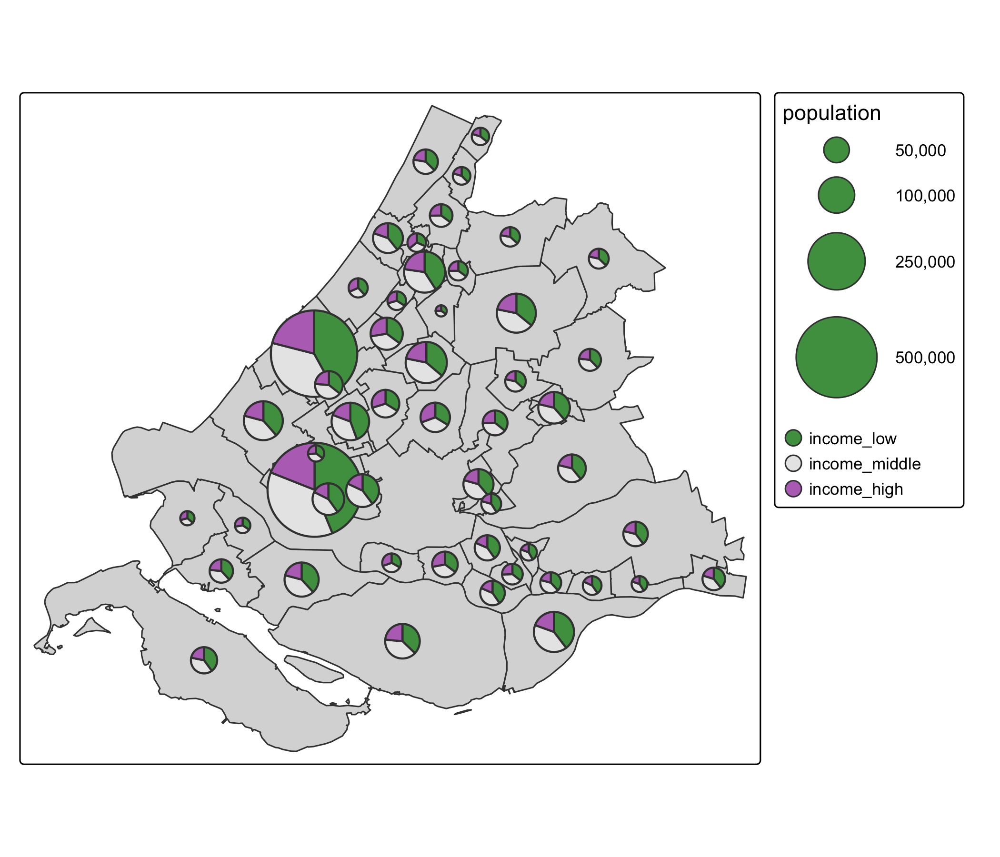
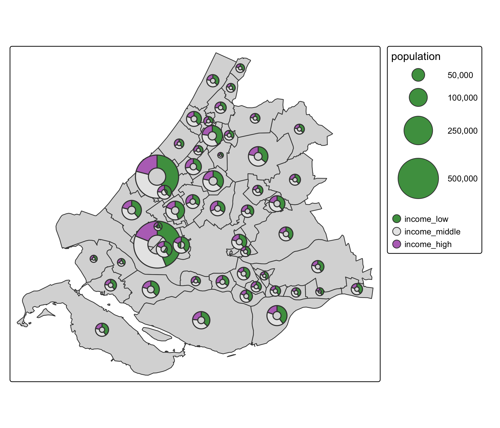
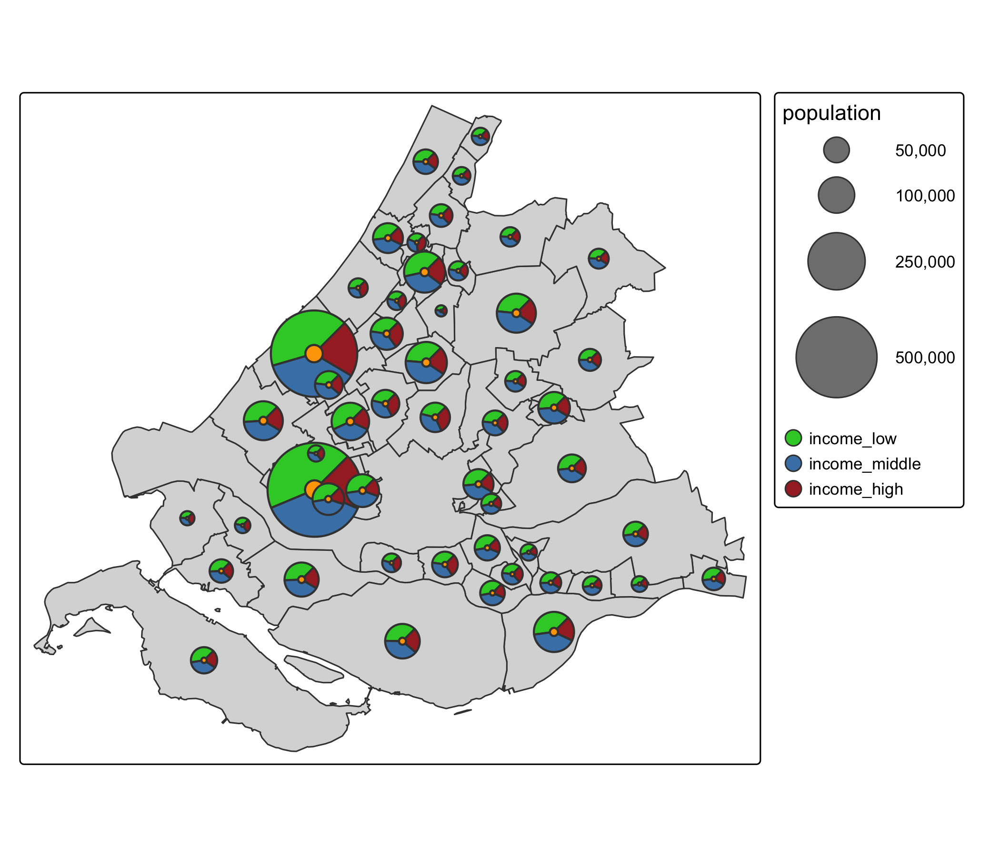
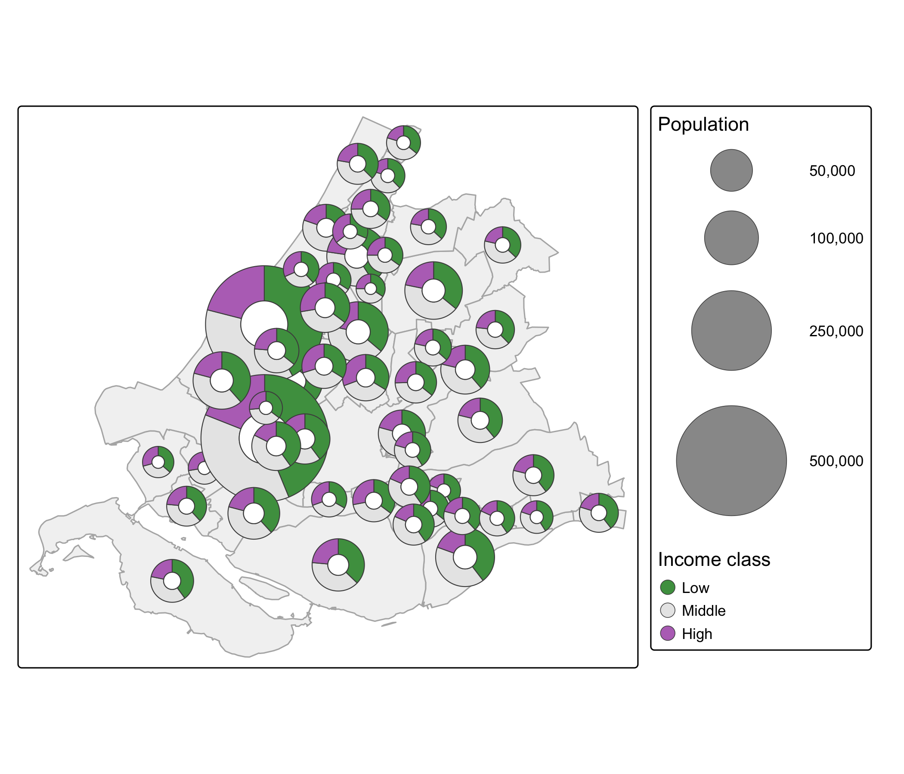
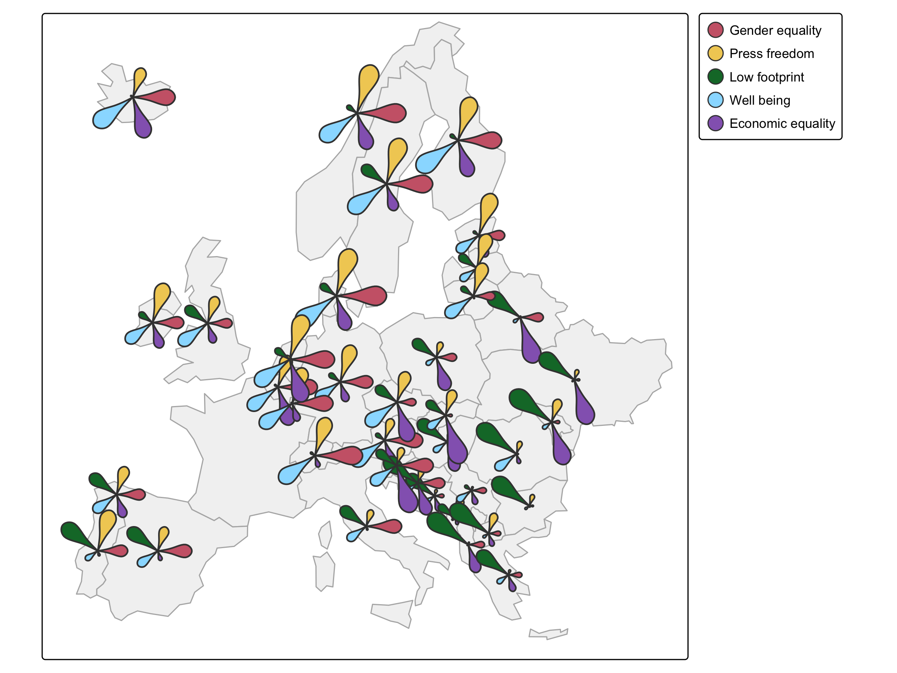

library(tmap)
library(tmap.glyphs)Advanced Static Cartography in R
Session 6: Glyph maps
Martijn Tennekes
Glyphs
What are glyphs?
- Glyphs are small charts drawn at specific map locations
- Each glyph can encode multiple data variables: a composition, a profile, a time series
- Examples: pie charts, donut charts, flower (petal) charts, star plots, sparklines
With the extension package tmap.glyphs (in development):
| Layer | Glyph |
|---|---|
tm_donuts() |
donut charts |
tm_pies() |
pie charts (a donut without a hole) |
tm_flowers() |
flower charts |
Setup
Example data: the municipalities of Zuid-Holland (a province of the Netherlands, including The Hague and Rotterdam) with the percentages of low, middle and high incomes.
Pie and donut maps
Pie map
Pie map

The new map variable parts
partsdetermines how the glyphs are cut into slices- It must be a multivariate map variable:
tm_vars(..., multivariate = TRUE) - The fill colors of the parts are specified via
fill.scale(not viaparts) - The fill scale should be categorical: each part represents a category
sizedetermines the overall size of the glyphs (here: population)
Donut map
Donut map

Donut options
tm_shape(ZH_muni) +
tm_polygons() +
tm_donuts(
parts = tm_vars(c("income_low", "income_middle", "income_high"), multivariate = TRUE),
fill.scale = tm_scale_categorical(
values = c("limegreen", "steelblue", "brown"),
value.neutral = "grey50"),
size = "population",
lwd = 1,
size.scale = tm_scale_continuous(ticks = c(50000, 100000, 250000, 500000)),
options = opt_tm_donuts(start = 45, direction = -1, inner = 0.2, fill_hole = "orange"))Donut options

opt_tm_donuts()
| Option | Meaning |
|---|---|
start |
start angle of the first part (degrees) |
direction |
1 clockwise, -1 counter-clockwise |
inner |
relative size of the hole (0.4 by default; tm_pies() has no hole) |
fill_hole |
color of the hole (FALSE/NA: transparent) |
points_only, point_per, on_surface |
how polygons are converted to points |
value.neutral (in the fill scale) is the color used in the other legends, here the size legend.
Design: size scale
- Glyph size follows the (continuous) scale of the size variable
values.scaleenlarges or shrinks all glyphsvalues.rangelimits the range of sizes (e.g. to keep small glyphs readable)limitsandticksdefine the range and legend items
Design: size scale in practice
tm_shape(ZH_muni) +
tm_polygons(fill = "grey95", col = "grey70") +
tm_donuts(
parts = tm_vars(c("income_low", "income_middle", "income_high"), multivariate = TRUE),
fill.scale = tm_scale_categorical(values = "-pu_gn_div",
labels = c("Low", "Middle", "High"),
value.neutral = "grey60"),
fill.legend = tm_legend("Income class"),
size = "population",
size.scale = tm_scale_continuous(
values.scale = 1.5,
values.range = c(0.2, 1),
ticks = c(50000, 100000, 250000, 500000)),
size.legend = tm_legend("Population"),
col = "grey30",
lwd = 0.5,
options = opt_tm_donuts(fill_hole = "white"))Design: size scale in practice

Design considerations
- Pies and donuts show composition: parts should add up to a meaningful whole
- Keep the number of parts small (≤ 5-6) and use a categorical palette with distinct colors
- Order the parts meaningfully (e.g. low → middle → high)
- Glyphs overlap in dense areas: reduce the size, filter, aggregate, or use an inset (session 10)
- Keep the background map subtle (light fill, thin borders)
- Glyphs are hard to compare precisely: angles/areas are perceived less accurately than lengths
Flower maps
Flowers
- Each petal represents a variable; the petal length represents its value
- Suited to showing a profile of several indicators (scaled to a common range)
- Values should be normalized, e.g. to ranks between 0 and 1
q = function(x) {
r = rank(x)
r[is.na(x)] = NA
r / max(r, na.rm = TRUE)
}
Eur = World[World$continent == "Europe" & World$name != "Russia", ]
Eur$rank_gender = q(-Eur$gender) # low gender inequality is better
Eur$rank_press = q(Eur$press) # high press freedom score is better
Eur$rank_footprint = q(-Eur$footprint) # low footprint is better
Eur$rank_well_being = q(Eur$well_being)
Eur$rank_inequality = q(-Eur$inequality)Flower map of Europe
bb_eur = sf::st_bbox(c(xmin = 2500000, ymin = 1400000,
xmax = 6500000, ymax = 5400000), crs = 3035)
tm_shape(Eur, crs = 3035, bbox = bb_eur) +
tm_polygons(fill = "grey95", col = "grey70") +
tm_flowers(
parts = tm_vars(c("rank_gender", "rank_press", "rank_footprint",
"rank_well_being", "rank_inequality"), multivariate = TRUE),
fill.scale = tm_scale(values = "friendly5",
labels = c("Gender equality", "Press freedom", "Low footprint",
"Well being", "Economic equality")),
fill.legend = tm_legend(""),
size = 0.9)Flower map of Europe

Flowers: observations
- Overlap is still a problem in central Europe
- Countries with a missing value get no flower
- The same indicator is always at the same position (angle): compare petals, not flowers
- Alternatives when overlap is a problem:
- a grid map: one cell per region, and the glyph inside the cell (session 7)
- an inset of the dense area (session 10)
Glyphs in practice
Donut map with half lines

Dutch commuter flows 2024: donut size = total jobs per municipality; slices = where workers live (Amsterdam, Rotterdam, Den Haag, Utrecht, local, other). Built with tmap.glyphs and tmap.networks (session 11).
Glyphs in view mode
Glyph layers also work interactively (with hover and popup):
tmap_mode("view")
tm_shape(ZH_muni) +
tm_polygons() +
tm_donuts(
parts = tm_vars(c("income_low", "income_middle", "income_high"), multivariate = TRUE),
fill.scale = tm_scale_categorical(values = "-pu_gn_div"),
size = "population",
hover = "name",
popup = tm_popup(vars = c("income_low", "income_middle", "income_high"), title = "name"))
tmap_mode("plot")Recap
tmap.glyphsaddstm_donuts(),tm_pies()andtm_flowers()- The map variable
partsis multivariate:tm_vars(..., multivariate = TRUE) - Colors of the parts via
fill.scale(categorical); glyph size viasize/size.scale - Layout options via
opt_tm_donuts()/opt_tm_flowers() - Main design challenge: overlap → size scale, filtering, grid maps, insets
- Further reading: tmap.glyphs | glyphs vignette | multivariate